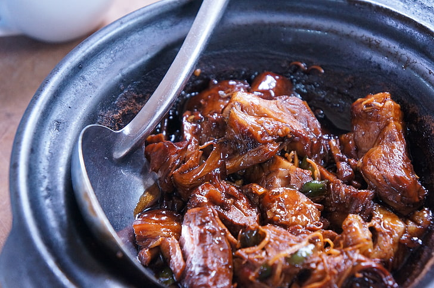

CALDERETA
Caldereta is a comforting beef stew popular in the Philippines. Every family has its own version. Experiment with the ingredients and try different vegetables. Best served with white rice!

SINIGANG
Sinigang is one of my favorite Filipino dishes. It's an absolute comfort food with a sour taste from lemon. Serve with rice.

ADOBO
This classic adobo recipe is simple to make and famous with all who have tasted it. It has been modified to be a bit more saucy than traditional adobo, it is delicious served over rice.